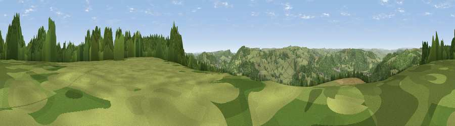

Viewpoint near Darley Dale
#19023 in England · top 22% of its area beats it · near Darley DaleWhere it is
The exact computed spot (SK 29575 62425). Click the marker for map links.
The view, rendered

A 360° render of this exact spot computed from the terrain model, tree cover and land cover — summer colours, afternoon light, calibrated against photographs of famous viewpoints. Real trees, hedges and buildings will differ in detail.
The panorama
Grey silhouette: terrain skyline in each direction (720 bearings, Earth curvature and refraction included). Dashed green: skyline with trees (+15 m) and buildings (+8 m) as obstacles. Blue strip: how far the ground is visible on each bearing.
Where the view opens
Wedge length = distance to the farthest visible ground on that bearing (vegetation-aware). Rings at 10, 25 and 50 km.
What fills the view
59% grassland · 33% woodland · 6% cropland · 2% built-up
Angular shares of the visible panorama (visual magnitude), not map area. Landscape diversity 0.40 (0–1 Shannon).
Key numbers
More beautiful places nearby
The staircase of upgrades: each row has a higher view potential than everything closer. Driving times are estimates from straight-line distance, calibrated against real road routing — check an actual route before setting out.
| Place | Direction | Drive | Score |
|---|---|---|---|
| Viewpoint near Tinkersley | NNW · 4 km | ~9 min | 65.6 |
| Viewpoint near Alton | ENE · 6 km | ~13 min | 67.0 |
| Viewpoint near Alton | E · 6 km | ~13 min | 67.7 |
| Viewpoint near Brackenfield | ESE · 7 km | ~14 min | 68.3 |
| Viewpoint near Wirksworth | S · 7 km | ~15 min | 70.0 |
| Crich Stand | SSE · 9 km | ~17 min | 73.0 |
| Alport Height | S · 11 km | ~21 min | 73.9 |
| Tissington Hill | SW · 17 km | ~30 min | 75.5 |
53.15814, -1.55916 · source: screening · position refined by local search. Computed location — check access rights before visiting.